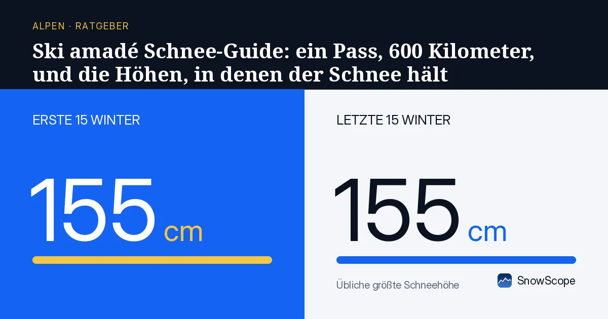
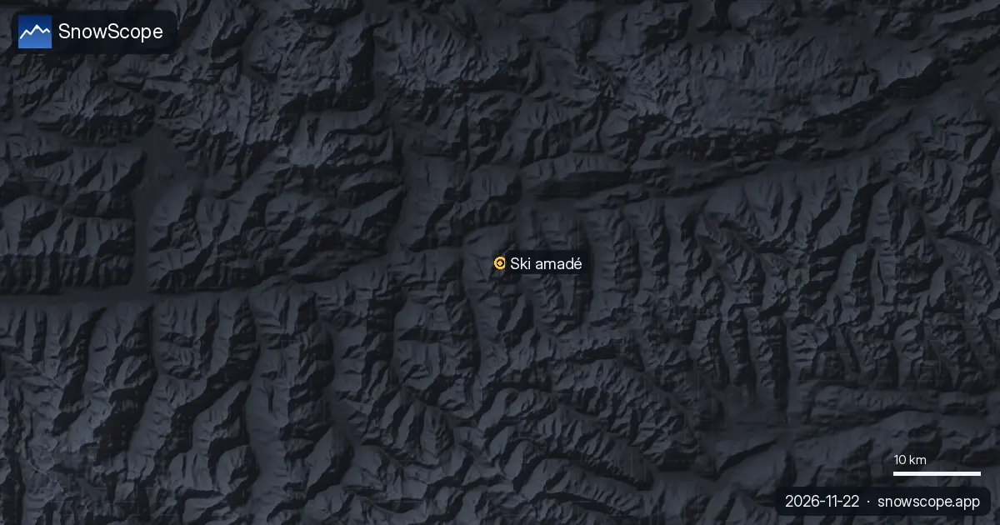

Ski amadé Schnee-Guide: ein Pass, 600 Kilometer, und die Höhen, in denen der Schnee hält
Ski amadé verbindet fünf Regionen in Salzburg und der Steiermark auf einem Pass: 605 km kartierte Pisten und 239 Lifte, von Talböden um 667 m bis zu Gipfeln auf 2642 m. Ein Pass, aber nicht ein Schnee. Die Täler des Pongaus liegen für die Alpen tief, und der obere Teil des Gebiets ist ein anderer Winter. Unsere Historie aus 46 Wintern zeigt, wo man zu welchem Zeitpunkt der Saison stehen sollte.
Die Live-Schneeprognose für Ski amadé in der SnowScope-AppSchneehöhen, Pulverschnee-Alarme und 3D-Karte, gratis.

Die Täler: dünn und aus der Kanone
Im Tal (667 m) liegt das übliche Winter-Maximum bei nur 39 cm, ein typischer Dezember hat 14 cm. Der schwächste Winter der Reihe erreichte dort 15 cm, der stärkste 73 cm. Darum laufen die Talabfahrten von Flachau, Wagrain oder Schladming den Großteil der Saison auf Kunstschnee.
Mittelstation: das eigentliche Skifahren
An der Mittelstation (1654 m) sieht alles anders aus. Das übliche Maximum ist 151 cm, der erste Schnee liegt in der Hälfte der Winter bis zum 30. September, und die Monatswerte steigen von 44 cm im Dezember auf 76 cm im Januar, 115 cm im Februar und 122 cm im März, dem tiefsten Monat.
Die Mittelstation hält mindestens 50 cm für 10 Wochen in neun von zehn Wintern und 19 Wochen in der Hälfte. Die verlässlichste Woche ist die Kalenderwoche 10, Anfang März, mit üblichen 128 cm.
Die Gipfel: Hochkönig, Zauchensee und die hohen Kämme
Am oberen Ende des Verbunds (2642 m) liegt das übliche Maximum bei 243 cm. Der Dezember hat schon 89 cm, der März 195 cm und der April 175 cm. Die höchsten Ecken von Ski amadé um Zauchensee und den Hochkönig sind das Ziel für Dezemberreisen.
Dezember: die Höhe entscheidet
Eine Dezemberwoche in Ski amadé ist eine Entscheidung über die Höhe. Das Tal gibt in einem üblichen Jahr 14 cm, die Mittelstation 44 cm, der Gipfel 89 cm. Neun von zehn Dezembern hatten an der Mittelstation mindestens 14 cm.
46 Winter Veränderung
Das übliche Maximum am Gipfel ging von 249 cm in den ersten 15 Wintern auf 244 cm in den letzten 15; an der Mittelstation von 155 auf 155 cm. Die Tage mit Schnee im Tal sanken von 166 auf 149. Der letzte Winter erreichte an der Mittelstation 87 cm, deutlich unter den üblichen 151 cm.
Tipps für Skifahrer
- Im Dezember die höheren Orte buchen und die oberen Hälften fahren; die Talabfahrten sind Kunstschnee.
- Februar und März bringen im ganzen Verbund den tiefsten Naturschnee.
- Unsere Schneehöhen sind eine Schätzung für das Gebiet aus vergangenen Wintern, keine Messungen des Skigebiets; Liftstatus auf der offiziellen Seite.
- Der Pass gilt in fünf Regionen: an ruhigen Tagen ein anderes Tal ansteuern statt am Heimlift anzustehen.
Quellen und Nachweise
- Wikipedia, „Ski amadé“, abgerufen am 22 November 2026. de.wikipedia.org/wiki/Ski_amad%C3%A9
Zu diesen Zahlen
Schneewerte: SnowScope-Schneehistorie, 46 vergangene Winter (1980-81 bis 2025-26) auf drei Höhen des Skigebiets, ein höhenkorrigiertes Modell der Vergangenheit (eine Schätzung für eine Fläche, keine Meldungen des Skigebiets). Lifte, Pisten und Anreise: die Quellen unten, geprüft am angegebenen Datum.
Offizielle Lawinenlageberichte: Lawinenwarndienst Salzburg
Diesen Bericht zitieren
Für Forschung, Lehre oder Presse: Zahlen und Grafiken sind unter CC BY 4.0 mit dieser Quellenangabe frei nutzbar.
SnowScope (2026), Ski amadé Schnee-Guide: ein Pass, 600 Kilometer, und die Höhen, in denen der Schnee hält, https://snowscope.app/blog/de/2026/11/ski-amade-snow-guide-which-height-holds-snow-best.html, abgerufen am 2026-11-22
SnowScope (Atlas Labs). (2026, November 22). Ski amadé Schnee-Guide: ein Pass, 600 Kilometer, und die Höhen, in denen der Schnee hält. SnowScope snow reports. https://snowscope.app/blog/de/2026/11/ski-amade-snow-guide-which-height-holds-snow-best.html
BibTeX
@misc{snowscope2026skiamadesnowguidewhichhe,
author = {{SnowScope (Atlas Labs)}},
title = {Ski amadé Schnee-Guide: ein Pass, 600 Kilometer, und die Höhen, in denen der Schnee hält},
year = {2026},
month = nov,
howpublished = {\url{https://snowscope.app/blog/de/2026/11/ski-amade-snow-guide-which-height-holds-snow-best.html}},
note = {Published 2026-11-22 11:14 UTC; accessed 2026-11-22}
}· CC BY 4.0 · Methoden, Daten und Werkzeuge →
Ski amadé: Schnee und Temperatur nach Höhe, dieser Winter vs letzter (Werkzeuge) →
Ski amadé folgen
Gratis: eine Nachricht, wenn Neuschnee kommt, und jeden Morgen die Vorhersage.